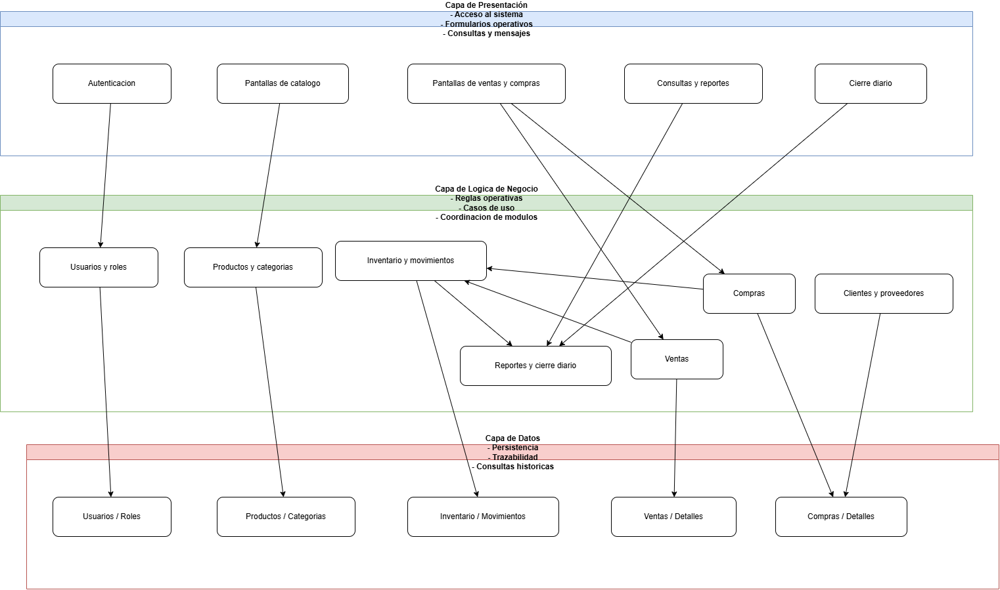
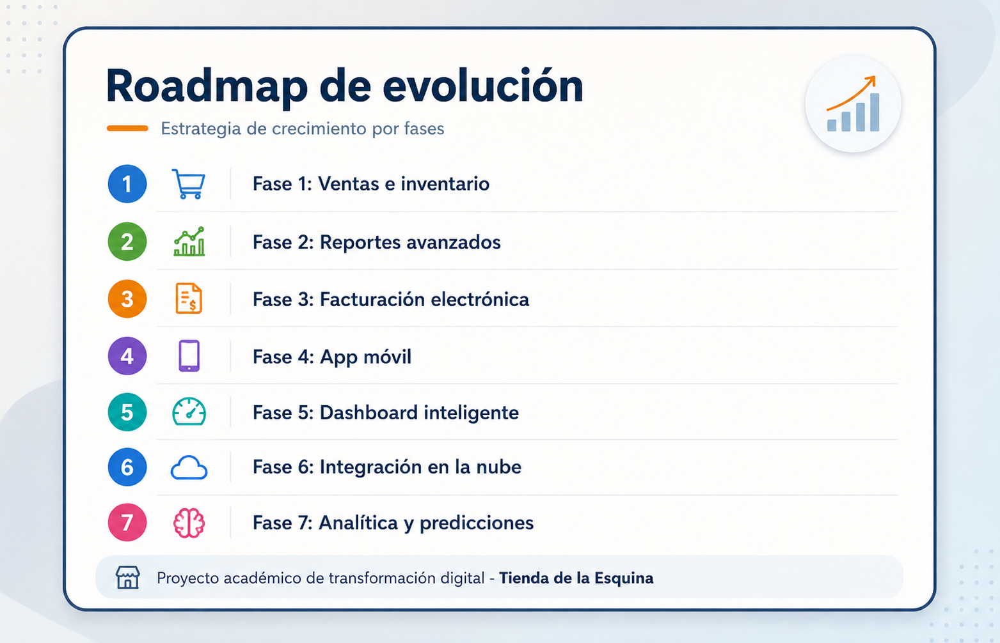

Análisis y diseño de sistemas
Tienda de la Esquina
Este portal presenta de forma ejecutiva y navegable todo el proyecto académico: análisis del negocio, Scrum, requerimientos, modelado UML, Arquitectura Candidata, QA y propuesta de evolución futura.
Universidad: Mariano Gálvez
Curso: Análisis de Sistemas
Integrante: Anderson Perdomo
Resumen ejecutivo
El proyecto parte de un problema operativo concreto: la tienda depende de procesos manuales para ventas, inventario, compras y cierres diarios. La propuesta transforma esa necesidad en una base documental completa que reduce incertidumbre y ordena una futura implementación.
Scrum
UML
Arquitectura candidata
Mockups
QA
Valor del proyecto
La entrega no programa el sistema. Su valor esta en demostrar dominio de análisis, modelado, trazabilidad y diseño previo a la construcción, con una capa adicional de consultoría para evolución futura.
Problemática
La operación manual dificulta control de existencias, consistencia de precios, trazabilidad de ventas y generacion de reportes confiables.
Solución propuesta
Se construyó un ecosistema documental completo con Scrum, requerimientos, UML, ER, arquitectura, mockups, QA y propuesta de evolución futura.
Beneficios
Menor incertidumbre, mejor alineacion con el negocio, validación anticipada de flujos y una base ordenada para futura implementación.
Scrum en una vista
Product Owner
Prioriza necesidades del negocio y valor esperado para Don Pedro.
Scrum Master
Ordena la metodología, revisa coherencia y cuida el avance por fases.
Developers
Transforman el problema de negocio en artefactos funcionales, visuales y tecnicos.
Capas del portal
- Gestión metodológica con Scrum y backlog.
- Análisis funcional mediante RF, RNF, reglas y Casos de Uso.
- Diseño estructural con UML, ER y arquitectura.
- Validación con mockups, riesgos, QA y propuesta futura.
Accesos rapidos

Arquitectura candidata enfocada en módulos, separación de responsabilidades y trazabilidad operativa.

Ruta de evolución desde ventas e inventario hasta analítica y predicciones.
Mockups destacados
Login
Acceso inicial con enfoque por rol operativo y administrativo.
Dashboard
Resumen visual del negocio, indicadores y alertas principales.
Ventas
Pantalla central para registrar productos, cantidades y total de la transacción.
Inventario
Supervision de stock, agotados, vencimientos y movimientos relevantes.
QA y validación
Pruebas
20 casos de prueba documentales para verificar cobertura funcional y visual.
Trazabilidad
Matriz que relaciona RF, historias, Casos de Uso, reglas, módulos y entidades.
Calidad
Checklist y revision técnica para asegurar coherencia global antes de la entrega final.